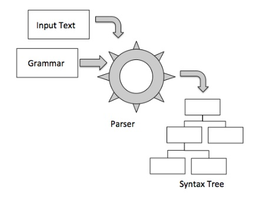
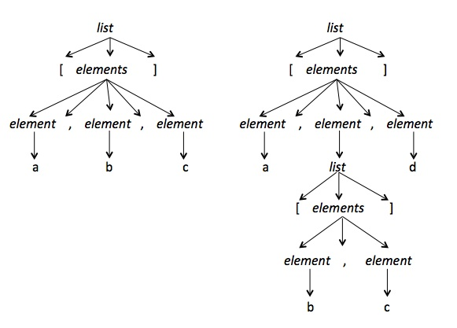

Penn State Great Valley
DSL Course - Lecture 7
Delimiter-Directed and Syntax-Directed
Translation
If a DSL is a "mini-language" then Delimiter-Directed translators
process "micro-languages." This type of translation is so
routinized that there typically are Operating System apis or language
apis that implement them. From Delimiter-Directed translators
there is a very big step up to
Syntax-Directed translators. This step usually entails the
definition of a language grammar and possibly the use of compiler tools
like a parser generator.
Let's start with the easy approach of Delimiter-Directed Translation
Delimiter-Directed Translation
How It Works
Delimiter-Directed Translation (DDT) works by taking the input and
breaking
it down into small chunks based on a small set of delimiter
characters. Usually the input is line-oriented so the individual
lines are isolated and then delimiter characters are used to isolate
tokens within the line.
Due to the line-orientation there is a the fundamental problem of
distinguishing between a "logical line" and one or more "physical
lines". To solve this problem most DDTs recognize some kind of
line continuation characters
(Example: \ character in Korn shell scripts).
Another characteristic here is that each line is autonomous and can be
processed independently of other lines. This is the easiest
case for a DDL, but a sophisticated DDL can still handle
semi-autonomous lines where context is important.
Once a line has been read then next step is to tokenize (break it into
tokens) based on an established set of delimiter characters (you can
consider these punctuation characters). During this process you
want to ignore white space characters (examples: blanks and tabs) and
comment lines.
When To Use It
The great strength of DDT is that it is a technique that is very simple
for people to use. As mentioned before the next step is a big one
to Syntax-Directed Translation (SDT).
There is always that danger that a simple DDT type language grows and
grows in complexity. This is matched by the growing complexity of
the DDT itself which may become unmaintainable.
DDT Example: Windows .ini file
Although .ini files are obsolete they represent an example of a
micro-language processed by a DDT. A line can be:
; comment-text
[section]
name = value
Since .ini files have such a simple format there is a Windows api that
implements a DDT for them, GetPrivateProfileString.
DDT Example: Java properties file
Java .properties files also exemplify a micro-language processed by a
DDT.
A line can be:
# comment-text
! more comment-text
name = value
name1 = a very \
long property \
value
The class used to read and write properties files is java.util.Properties.
As of version 1.5 Java property files can be represented in XML syntax.
DDT Example - Frequent
Customer Points
This is the example given by Fowler (pp. 205 - 210) and I believe it
pushes the limit of what can be down with a DDT. Each "offer" is
line-oriented and each line is autonomous. The processing of each
line is non-trivial. Note that the processing program consists of
two distinct sets of classes: those related to the semantic
model and those which implement the DDT.
Here's a potential grammar for the "offers" language.
offer : reward-phrase activity-phrase location-phrase ;
reward-phrase : number per-phrase? 'for' ;
per-phrase : 'per' ('day' | 'dollar') ;
activity-phrase : ('stay' duration | 'dinner' | 'spa treatment' ) ;
duration : number ('night' | 'nights' ) ;
number : ('0'..'9')+ ;
location-phrase : at locaction;
location : ( 'Bree' | 'Dol Amroth' | ...) ('or' location)* ;
Fowler's next example of Miss Grant's Controller is even more complex
and should steer you toward a SDT.
Syntax-Directed Translator
How it Works
At this point your DSL is no longer a "micro language" and it needs a
grammar. A grammar is a set of formal rules that specify what are
legal sentences in your language. Since the grammar plays a
key role is cannot be omitted.
The grammar can be incorporated into the SDT in two ways. It can
be directly implemented via a technique known as Recursive Descent
Parser (custom program) or it can be processed by a Parser Generator
which generates a program for you. The result of parsing is a
syntax-tree representation of the language. The syntax-tree, as
we will see later, can be further processed into a form that meets the
goals of the DSL.
Both approaches are shown in the diagram below.


When using a SDT you will almost always see a separation between a
lexer and a parser. A lexer, also called a tokenizer or a
scanner, is the first stage in processing the input text.
The tokens are generally defined using regular expressions. Once
a token is recognized it is processed by the parser to determine how it
fits into the syntax tree.
Despite its simplicity of purpose the lexer must deal with line
continuation problems, white-space elimination, and comment
processing. Sometime (actually frequently) comments are
eliminated before the parser can see them. This is not a good
approach when your DSL represents a translator from one language form
to another and you want to see your comments preserved in the new
language.
The next part of SDT is the parser itself. The parser's behavior
can be divided into two main sections: syntactic analysis and
actions. Syntactic analysis takes the stream of tokens and
arranges them into a parse tree. The actions take that tree and
do something with it, like populating a Semantic Model.
When to Use It
Syntax Directed Translation used when you move beyond line-oriented
Delimiter-Directed Translation. It is a more sophisticated
approach requiring the definition of a grammar.
A grammar has the benefit of making clear what are legal sentences and
phrases in the language. It provides clear documentation of the
syntactic structure of the DSL it's processing. This makes it
easier to evolve the syntax of the DSL over time.
SDT Example: Nested Name List
Our SDT will parse name lists. What is a name list, you
ask? Here's one: [a, b, c]. Here's one with a nested list:
[a, [b, c], d]. Here's that the parse tree for each of these
examples looks like.

We need a grammar for this minute language and here it is.
list : '[' elements ']' ; // match bracketed list
elements : element (',' element)* ; // match comma-separated list
element : NAME | list ; // element is name or nested list
NAME : ('a'..'z'|'A'..'Z')+ ; // NAME is a sequence of at least 1 letter
The lexer will have to recognize the punctuation tokens of left/right
bracket, commas, and name tokens. It will have to skip white
space and to know when to stop as indicated by EOF in the input stream.
Here is the main loop within the lexer.
public Token nextToken() {
while ( c!=EOF ) {
switch ( c ) {
case ' ': case '\t': case '\n': case '\r': WS(); continue;
case ',' : consume(); return new Token(COMMA, ",");
case '[' : consume(); return new Token(LBRACK, "[");
case ']' : consume(); return new Token(RBRACK, "]");
default:
if ( isLETTER() ) return NAME();
throw new Error("invalid character: "+c);
}
}
return new Token(EOF_TYPE,"");
}
As you can see there is no rocket science here. The parser is not
much more complicated, however, recursion is involved (how did you
think that nested list was going to be processed?). Notice how
the parsing code calls upon the lexer to move to the next input token
when the current token matches the expected token.
public class ListParser extends Parser {
public ListParser(Lexer input) { super(input); }
/** list : '[' elements ']' ; // match bracketed list */
public void list() {
match(ListLexer.LBRACK); elements(); match(ListLexer.RBRACK);
}
/** elements : element (',' element)* ; */
void elements() {
element();
while ( lookahead.type==ListLexer.COMMA ) {
match(ListLexer.COMMA); element();
}
}
/** element : name | list ; // element is name or nested list */
void element() {
if ( lookahead.type==ListLexer.NAME ) match(ListLexer.NAME);
else if ( lookahead.type==ListLexer.LBRACK ) list();
else throw new Error("expecting name or list; found "+lookahead);
}
}
Let's see a Syntax Directed Translator in action by looking at a full
name list parser which uses recursive descent.
Made 18 February 2012
by R Rodini.